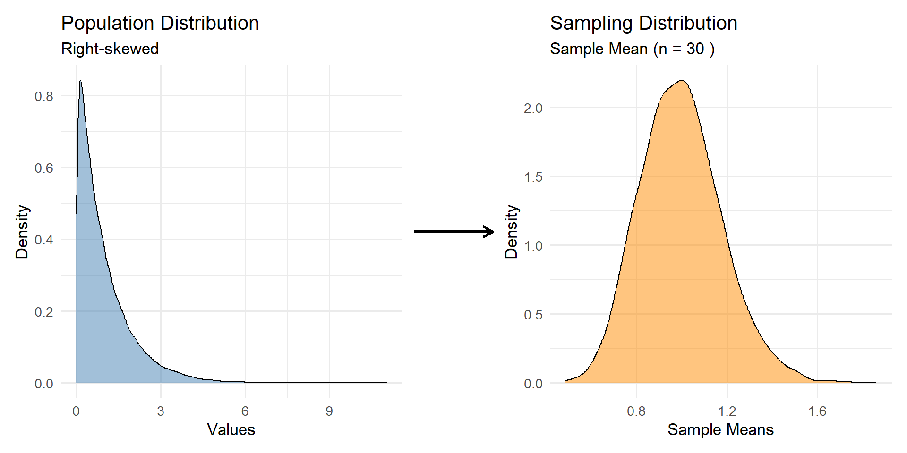
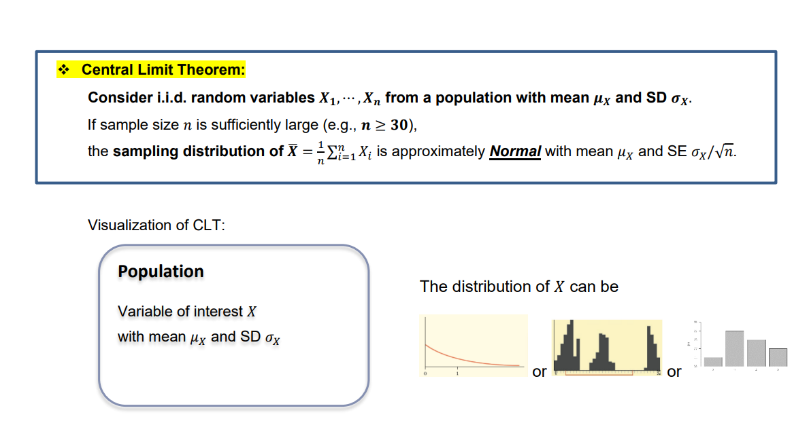
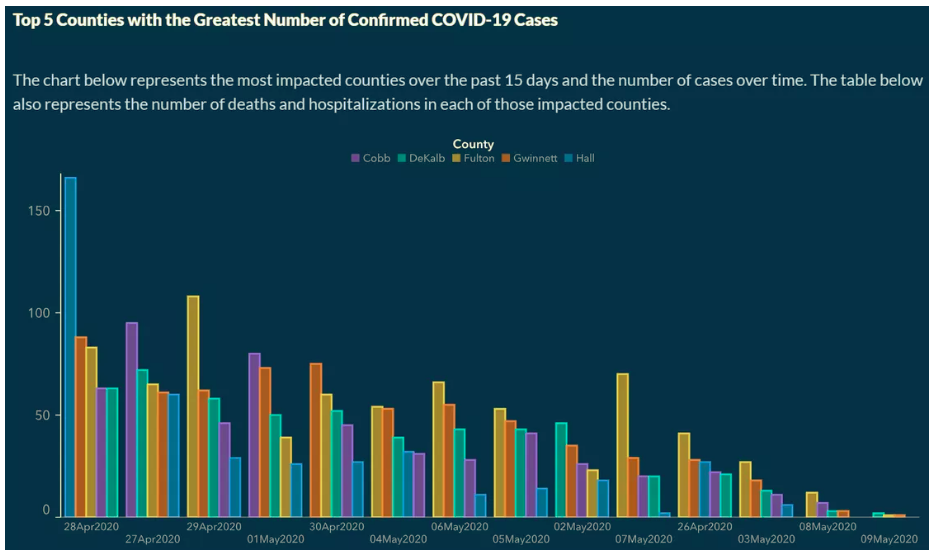

+ Fixing Plots
2026-11-10
– Please clone your clt project. We will work in this today!
– If time, we will finish the georgia task in the putting-it-together repo.
– in-class solutions are posted
– The Statistics Experience is LIVE!
– Your GitHub project is LIVE! Let’s talk about it
– No Lab (11-24)
– No Quiz or Homework this week (get started on your project!)
– Proficiency test V (11-17)
– Final Exam (12-3)
Ask and answer a research question using the tools we have learned in class!
Pick something you are interested in + excited about
Put enough time into this project to where you feel comfortable showing off your work
Ask and answer a research question using the tools we have learned in class!
– Use bibtex to cite any resources you use
– Use some dplyr functions on your data (create a new variable; manipulate a variable; join data sets; etc.)
– Have an appropriate number of GitHub issues created + responded to for each team member
– Practice using a proper GitHub workflow (ex. have meaningful multiple commits by each team member)
– Have a clean repo. This includes not having unnecessary files in your repo; having your data in a data folder; etc.
Let’s demo this in your putting it together repo!
Citations are an important part of research. Quarto can use bibtex files (.bib) to automatically generate citations and a bibliography in a number of styles.
---
title: "My Document"
bibliography: references.bib
---DOI (Digital Object Identifier) is a unique, permanent alphanumeric string assigned to an online document, dataset, or digital object to provide a reliable web address that never breaks.
DOI: 10.1111/ssm.12430
Many articles have Export to bibtex!
@misc{thalla2026student,
author = {Thalla, Mohan Krishna},
title = {Student Academic Performance and Dropout Risk},
year = {2026},
howpublished = {Kaggle},
url = {https://www.kaggle.com/datasets/mohankrishnathalla/student-academic-performance-and-dropout-risk}
}The data were obtained from Kaggle [@thalla2026student].One of the more foundational ideas in statistics in the Central Limit Theorem.
– Review the topic
– Approach/explore it from a coding perspective
– What is it?
– Why is it important?


i.i.d -
Independent: The outcome of one observation does not influence the outcome of another observation.
Identically distributed: Every observation comes from the same probability distribution (same population, mean, and variance).
Write a function that explores the CLT for single mean and single proportion (proportion is just a special case of single mean where data are 0, 1)!
What could/should my function include?
Write a function that explores the CLT for single mean and single proportion!
– population data
– sample size from population (n)
– number of simulations
sample() may also help us! Please see the help file for this.
Why should we be using set.seed() here?
Note: Use the function to create the data, and plot the data outside of the function. You can use ggplot() or base R hist() for a quick histogram
Do you know….?
Probably not… but we can explore this via simulation!
How can we change our function to be more flexible, and have it incorporate other statistics?
The sampling distributions of the sample minimum and maximum do not become approximately normal under the classical CLT.
They are examples of order statistics, and their limiting distributions depend on the underlying population distribution.
Georgia Department of Public Health (DPH) temporarily published the following graph on the COVID-19 Daily Status Report.
– What is misleading about this graph?
– Why might it be misleading?
